Alien Isolation Zombies is a custom map for Black Ops 3 which I created in my spare time on and off between September 2016 and September 2018. The aim of the project was to teach myself all about material types, assembling a fun and engaging level, gameplay scripting, and lighting. As the project grew it ended up teaching me even more than that however, as publicity and interacting with the community became quite a big part of the map's success. I created a number of trailers for the map and publicised them around forums on the internet.
The map has five main areas unlocked through the course of playing a linear narrative, helped along by cutscenes and voiceover work taken from the original game and repurposed. I edited cutscenes and audio to fit the story of the Zombies experience which added greatly to the atmosphere of the map and helped greatly to convey the story I was going for. I wanted to keep the narrative close to that of the original game, but with Zombies instead of a Xenomorph.
You're part of a team sent to Sevastopol Station aboard The Torrens following Weylan-Yutani recieving a distress signal from Colonial Marshal Waits. The message asks for immediate help to deal with the reanimation of the station's residents, however your primary objective from the Company is to investigate the status of the station and relay your findings to the Seegson response team. All other considerations secondary... crew expendable.
Check out the trailer for full release of the map below, and read on to find out more about the process of creating it and the thought that went into turning levels from Alien: Isolation into a fun zombies experience. I've also linked a few development testing videos and screenshots throughout.
Alien: Isolation is what got me into game development as a whole through extensive modding and research into its production. Due to that, it felt only right that I'd base a learning project like this on it, not only to pay homage to it as best as I could, but to keep myself interested and motivated when things got tricky.
As the Black Ops 3 mod tools didn't release until September of 2016, I spent some time before they launched porting models from Alien: Isolation in preparation. My original plan was to simply recreate the Spaceflight Terminal in the mod tools, so I spent time early-on rebuilding the area in Unreal Engine 4. It has a fast workflow for level creation and model importing so it seemed like an obvious choice. This was great as it allowed me to see what models I needed before the tools were available, so I kinda had a head start on it.
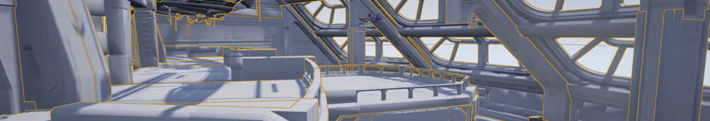Getting all the models for the map was one of the trickiest tasks early-on. Luckily two modders known as Cra0kalo and Volfin had put together basic tools to export them and re-import them into Blender. This wasn't an easy process however, and making sure models were exported correctly for use in the map was a pretty gruelling task.
As my workflow for importing models improved however, I slowly began plans for a larger play space, and eventually added the side spawn room just before release in December 2016. From there, I went on to add the Baggage Reclaim area, Tow Platform and The Torrens along with the Sevastopol Lobby in post-launch updates.
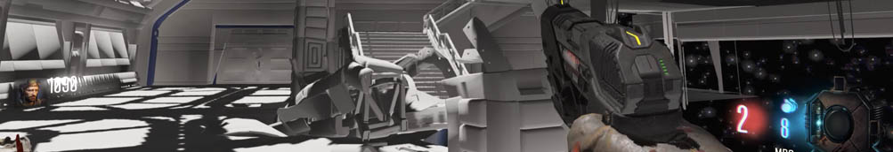Texturing and lighting were two key areas that really brought the map to life. In the early days, the majority of models were untextured as I prioritised model importing so that I could get the basic layout of the map completed. It's quite incredible how different it felt without any textures or lighting applied. It may sound like an obvious point, but the map was so sterile and lifeless. Even with early scripted events it just didn't feel right at all.
As soon as I added the shadow brushes and blocked the sunlight from entering the map, I was able to begin lighting work. Even without textures this added a whole other level of atmosphere to the map. It really makes you appreciate the little details in lighting systems within games, and allowed me to understand just how big of a part lighting plays in the overall visual experience.
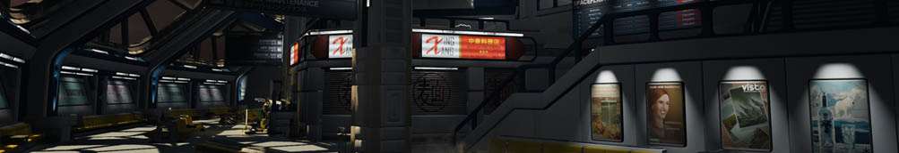Visual style is something I was very pleased with in The Torrens section of the map especially. I experimented with pushing the engine really to its limits with this section, cramming it with highly detailed lighting probes which often killed the renderer. AO among other things was turned down a touch as a result of this (along with performance issues), but I'm still very happy with the final result. Although not exactly accurate to the game, I think it's a pretty striking visual which easily grabs your attention in the first few minutes of gameplay.
FX particularly in the Black Ops 3 branch of the IW engine is superb, FX sprites react very well to lighting, just like how the particle systems in Alien: Isolation do. This allowed me to implement some pretty nice smoke effects around the map to build the atmosphere further, again, particularly visible in the science corridors aboard The Torrens.
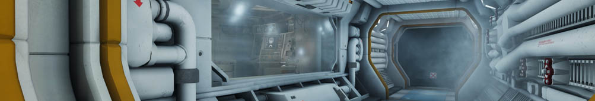One major mistake I made in the process of creating the map was model scale. All models from Isolation had to be scaled up to match the standard scale used in Black Ops 3. My process for doing this was to use the default human reference model against the stairs in the Spaceflight Terminal to judge the scale. However, what I should have done is place the reference in a doorway to work out the scale more accurately. Just judging it on the stairs made scale 2.0x seem fine, when in actual fact, players don't fit through doors from Isolation properly until models are scaled at 2.5x...
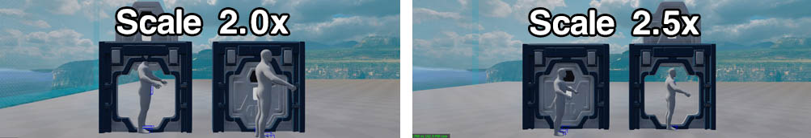As a result of this, the main Spaceflight Terminal area and Baggage Reclaim areas are all scaled smaller than they should be. I caught this pretty early on in development, so why didn't I ever change it? The answer is not out of laziness as you may suspect, but in fact because at this scale, it works great! It was absolutely an accidental stroke of genius. Although it was a pain working doorways around the scale issue so players don't clip through the top, I think having a smaller area in both of these key sections works wonders, as it forces you to keep moving which is exactly the effect I was after.
Other areas such as the Tow Platform (reasons explained later) and The Torrens (due to the cramped environments needing to be the correct scale) were created at the correct size.
An interesting issue that not many appear to have touched on when talking about my map is the hurdle of recreating sections of Alien: Isolation, a game designed to be played by one person being mainly stalked by one slow-fast enemy, in a multiplayer game with many slow enemies. This is something that took a while for me to overcome, and is why I landed on the areas I chose for the map.
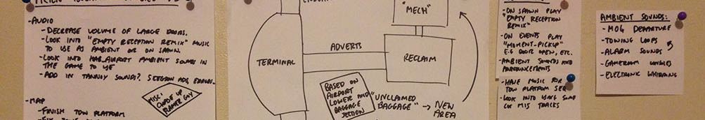Although a singleplayer game, Isolation has a number of open areas, most notably being the retail and airport sections. I was initially stuck between recreating the Solomons Galleria from Alien: Isolation, a large open mall with trailing corridors and a couple of shop/bar areas, and the Spaceflight Terminal. I eventually decided on the Spaceflight Terminal because of its opportunities for future expansion, particularly also for its striking visuals outside of the main window set providing opportunities for the scripted lockdown sequence.
The POI placement was planned out far in advance by taking screenshots of Isolation and annotating them with spawn locations, the potential areas players would hold out in, zombie risers, the power location, and the mystery box location. Unfortunately I lost all of these initial designs due to a Windows update, however I still have some later sketches and annotations (of which there were hundreds!).
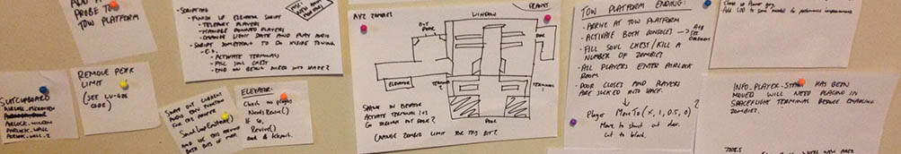All in all, not much had to be changed in each section of Isolation I recreated as the main viability for the spaces depended on when I allowed access to them at points of the map's linear progression. For example, The Torrens is only accessible at the very start of the map when there are no zombies around. Clearly the layout and size of The Torrens would be highly unsuited to zombie gameplay.
Next is the Sevastopol Lobby where zombies begin to spawn, this is an easy introduction as it is a big space and you're only thrown a few slow zombies at a time. There's then a 'choke point' of the security scanner area, something that works well to discourage players from re-entering the Lobby later in the rounds. All the resources you need to survive at later rounds are through those security scanners, which are incredibly hard to pass through if you are being followed by a lot of zombies. This adds a high risk/high reward to being able to get back to the Lobby to use it as a 'train' spot, of which it is designed to be.
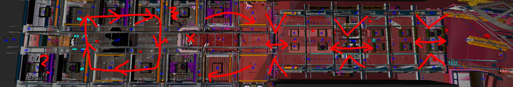You're then through to the Spaceflight Terminal. This has everything you need to survive in, but is very hard to navigate in later rounds due to the erratic zombie spawn points and obstacles in the form of seating through the main running space. It's manageable though, especially with the change I made of being able to do a full run around the map, which is impossible in Alien: Isolation because of the path they want you to take for a scripted sequence.
Many players choose to camp out around the "Cred-Op Amusements" to survive which is purposely made to look enticing with Juggernog in the back corner and friendly videogame jingles, however the tight walkway around the air hockey tables balance out the safety quite nicely, and it's a real risk to hold out in for extended periods of time.
Past the Spaceflight Terminal is Baggage Reclaim. Not a lot of reason to stay here, and it's supposed to be that way. You're enticed back with the option of Speed Cola, Mule Kick and the Thundergun - however the only real reason you need to go this way is to grab the keycard and return. It's intentionally a very hard area to hold out in being very cluttered with even more erratic spawns than the Spaceflight Terminal. It's a super cramped space and the zombies have traversal advantage, being able to vault the balcony where you get the keycard (which players cannot do), along with being able to vault the chairs in here which are an obstacle to the player. You also only have one way in and out, and zombies will spawn behind you in the corridor so it is very easy to get trapped.
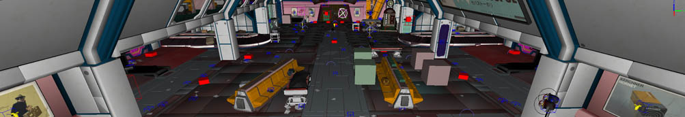On the map's first rounds of testing, the Spaceflight Terminal elevator was a common spot for holding out in along with the noodle bar where Pack-A-Punch is. To stop people holding out in the noodle bar I placed a couple of spawns in there as well as its own spawn zone which pushes more zombies at you if you wait around in there. This may seem harsh but it had to be done as it was an easily exploitable area, doing so also added to the risk of going for Pack-A-Punch which puts an interesting spin on how the player approaches it.
Solving the elevator was not so simple, initially I placed zombie spawns all down the corridor leading to it which made players very quickly overwhelmed if they waited there. This wasn't really what I was after and kinda ruined the fun, so I went back to the drawing board and changed it up a bit. I scaled up the corridor slightly and placed zombie spawns in the area before the metal section leading to the elevator itself. That way, players could easily hold out in the elevator still, but in doing so they were trapped from reaching any resources they need to survive. It meant the spot was escapable, and in doing so players would learn the lesson not to try it again. This was exactly what I was after.
Initially the elevator purchase triggered an immediate end of the game, however in future updates to the map I added the Tow Platform ending sequence, which absolutely deserves its own category!
The Tow Platform presented a number of interesting challenges for zombie implementation since it is such a small area. In Alien: Isolation this section is the first time that the player encounters two Xenomorphs in active play, so while there's plenty of cover to hide under, that's not a lot of use for zombies! I cut out the vent sections of the map in my version and also the staircase as these elements were unnecessary for my purpose, although I did begin working on the staircase and it is actually still there if you freecam through the doors.
The correct scale was used for this section as there is no way it would function at the smaller scale of the two main zones. Scripting tricks were also used to ensure that the players succeed, for example, the maximum number of zombies able to be spawned at any one time varies during the Tow Platform section, lowering from the standard max of 24 at any one time, down to just 9 for one player, or 7 for four players.
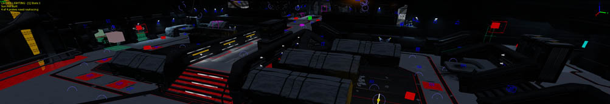This might seem like a drastic reduction, but it's still a hectic sequence as such a small area means the zombies are always on you, and the fast spawn rate of the later rounds (which is when you'll be in this area) gives little break between. The max count does also raise back up again after you've activated the clamp terminals to 12 for one player and 9 for four.
The main thing I wanted players to feel in this section is that winning is impossible, when in actual fact I absolutely want you to win now you've got here, and you actually have a very good chance of doing so.
I specifically chose the area for its ability to 'train' the zombies. It has a nice square route around which you enter into immediately understanding this as a player. Objectives are off to the side and the main play space is effectively a square race track with a big catwalk down the middle. Spawn placements are unintrusive to the 'train' route and often off to the side unlike other areas, like the Spaceflight Terminal, where some spawns are purposefully placed to interrupt extended 'trains'.
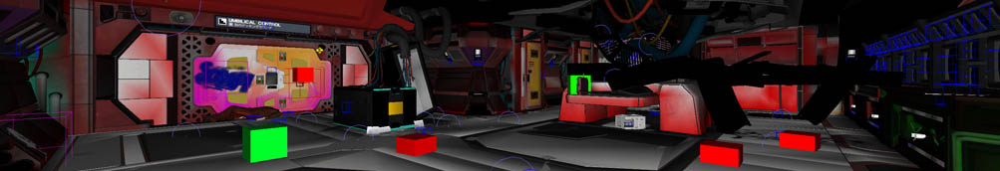Other than removing the vent and choosing not to include and/or block off sections such as the elevator lobby and staircase, this section of the map is pretty close to the original game, just minus a lot of the debris to keep areas open and clear. In terms of weapons/equipment, the monkeys are clearly placed as soon as you enter the area and they are super useful for activating the terminals, especially on your own. High power weapons like the raygun are available, and max ammo is dished out multiple times in the sequence, as well as all perks for free.
Despite all of this, you still absolutely get the sense that this section is working against you which gives players a buzz when they finally escape in the airlock. I'm yet to see a streamer or YouTuber unimpressed to have beaten this ending sequence, and at the end of the day, that makes it all worthwhile.